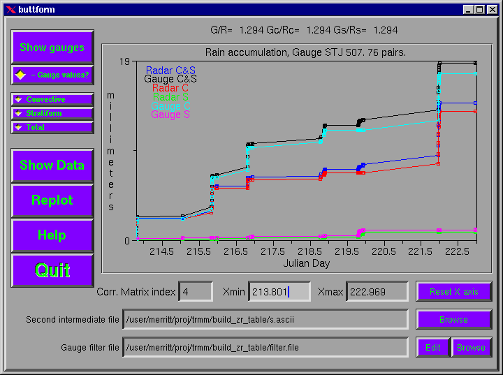
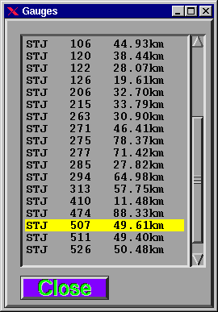
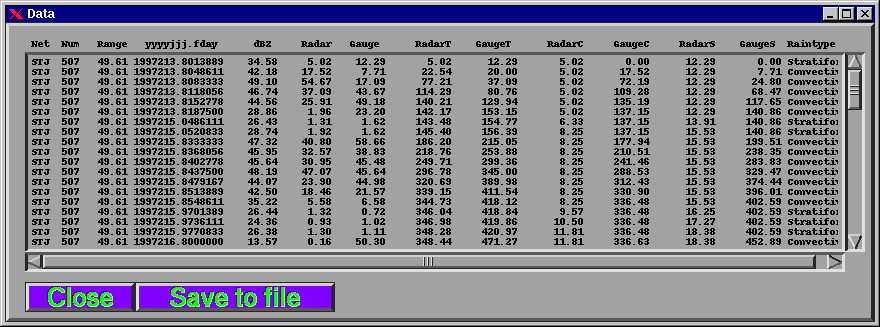

gauge_gui_main.pl:
Graphical interface to the Gauge Quality Control.
Updated
: July 22, 1998.
Screen shots
The main window:

The Gauges window:

The Data window:

Author
John H. Merritt,
Space Applications Corporation (SAC), NASA/GSFC/TRMM Office